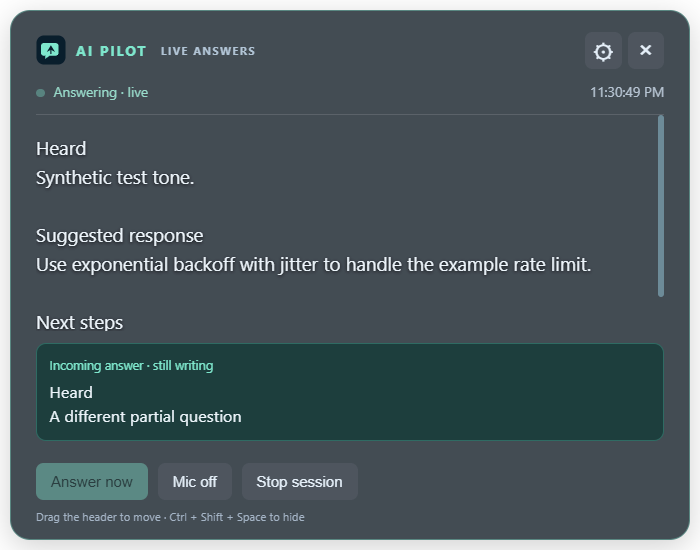
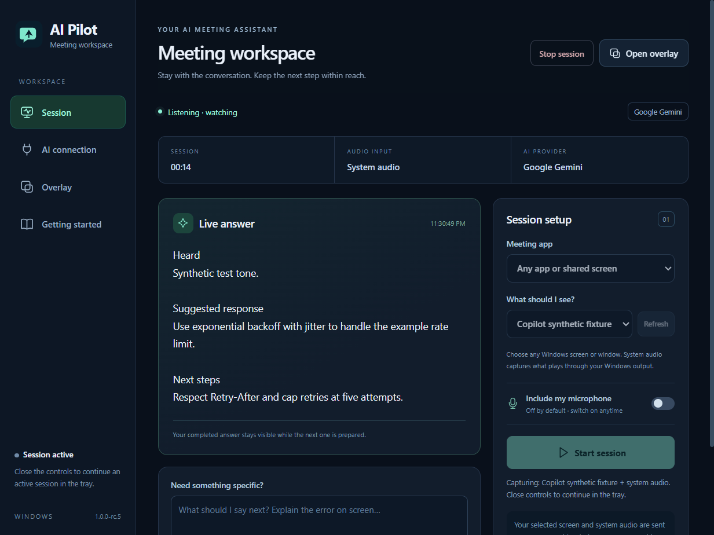

Choose your view.
Select a Windows screen or window. Capture presets guide setup for Zoom, Teams, Google Meet, and other apps. AI Pilot processes local capture rather than joining as a meeting bot.
Stay with the conversation. AI Pilot uses your chosen screen and meeting audio to stream useful suggestions into a floating overlay.
Windows x64 · 1.0.0-rc.5 preview · Unsigned installer
Your Gemini or OpenAI API key required. Provider usage charges apply.

Actual app screenshot with synthetic test content. Your previous answer stays visible while the next one streams.
Keep suggestions beside the material you are discussing. Move the overlay where it helps, ask a specific question, or let the active session follow changes in your screen and audio.
Select a Windows screen or window. Capture presets guide setup for Zoom, Teams, Google Meet, and other apps. AI Pilot processes local capture rather than joining as a meeting bot.
Suggested responses stream first. Audio checks run every three seconds with overlap to keep recent context. Provider and network conditions determine the final response time.
Switch AI Pilot’s microphone on or off during a session. Closing controls keeps the session in the tray. Stop & clear ends capture and clears the app’s session context.

Actual Windows dashboard · Synthetic local test content
A clear dashboard for your session, provider connection, and overlay preferences.
Use the preview with authorized meeting content and check your sharing setup before relying on overlay exclusion.
Choose Gemini or OpenAI, enter your API key, save settings, and test the connection. Saved keys use Windows encryption. Provider usage charges may apply.
Choose the window with shared content or a screen when switching programs. Play meeting audio through your Windows output. AI Pilot’s microphone starts off.
Read suggestions in the overlay as they stream. Switch the microphone when needed. Close controls to continue in the tray; use Stop & clear to end capture.
Download the Windows preview and bring your own Gemini or OpenAI API key. No separate backend or meeting bot is required.
Windows x64 · Approximately 115 MB · Published October 28, 2026
Installer is unsigned. Windows may show an unverified publisher warning. Follow your organization’s installation policy.
Download SHA-256 checksumcb0cb980554156b32e79499723a0dafd505ba232d06122ad0472088ba1a984b9
Captured screen and audio data are sent to your selected AI provider for analysis. Use authorized content and review that provider’s data policies. Keys saved by the Windows app are encrypted locally; the website does not collect API keys.
AI Pilot applies Windows capture protection to its windows. Results can differ across sharing modes, apps, and recordings. Verify from a second participant or device in your actual setup before relying on exclusion.
It controls only AI Pilot’s local microphone input. Your meeting app has its own microphone control. System audio can include sounds from other Windows apps, even with AI Pilot’s microphone off.
Audio is checked every three seconds; recent audio overlaps to keep question context. Answers stream as the provider returns them. Collection and processing both add latency; response time is not guaranteed.
This repository distributes the Windows installer and the public website. The application source project is not published. Downloadable Electron applications can still be inspected; this is not a guarantee against reverse engineering.